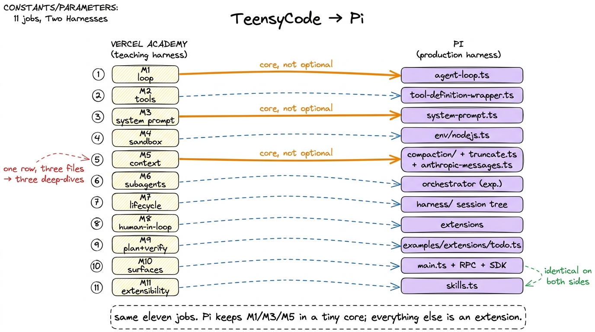
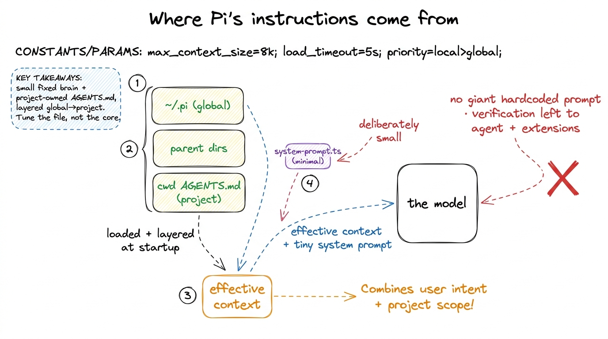
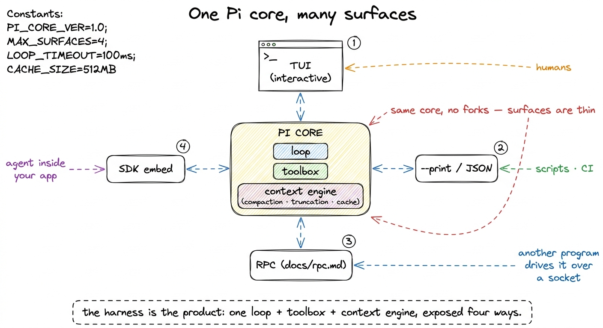

The full mapping: 11 modules to Pi's real code TABLE
You have now built the whole machine twice — once as a set of ideas across the five layers, and once, in miniature, as running code. So here is the payoff: a real production harness, opened up, with every part you were taught pointed at the exact file where it lives. Vercel Academy's course builds a teaching harness called TeensyCode (TypeScript, on the Vercel AI SDK) across eleven modules, each lesson deliberately fixing what the last one broke. Pi (earendil-works/pi, MIT, a.k.a. badlogic/pi-mono, pi.dev) is the same shape shipped for real: a small core plus an extension surface where all the policy lives. This page is the map between them — the anchor you keep open while reading the three deep-dives that follow.
Read the whole table once, then walk with me through the rows that reward a second look.
The full mapping: 11 modules to the Pi source
| Vercel Academy module (TeensyCode) | Where Pi does it (real code) | Pi's real choice / difference |
|---|---|---|
| M1 The Agent Loop (chat→agent, read/grep/bash, execute-safety) | packages/agent/src/agent-loop.ts, agent.ts; tools in coding-agent/src/core/tools/ | Same loop shape; toolbox is read/write/edit/bash/grep/find/ls + MCP. |
| M2 Tool Design (5-section descriptions, factory, approval discriminated-union) | tool description strings per tool; tool-definition-wrapper.ts; permission UX via extensions (interactive-mode.ts) | Rich instructional descriptions; approval is an extension concern, not hardcoded. |
M3 System Prompt (Agency/Guardrails/Ambiguity, buildSystemPrompt, AGENTS.md, verification gates) | packages/agent/src/harness/system-prompt.ts; AGENTS.md/SYSTEM.md loaded at startup from ~/.pi, parents, cwd | Deliberately minimal system prompt; project context via AGENTS.md; verification left to the agent + extensions. |
| M4 Sandbox Abstraction (local / in-memory / cloud, lifecycle hooks) | env abstraction packages/agent/src/harness/env/nodejs.ts; coding-agent/bun/restore-sandbox-env.ts; SSH/path-protection extensions | Execution env is pluggable; sandboxing + path protection + SSH exec are extensions, not a fixed 3-backend interface. |
| M5 Context Management (prune, bounded tool output, cache control) | compaction (agent/.../compaction/), truncation (coding-agent/.../truncate.ts), cache (ai/.../anthropic-messages.ts) | Summarization (not prune), 50 KB / 2000-line caps, rolling cache breakpoints. See the three deep-dives. |
| M6 Subagent Delegation (explorer/executor, task tool, per-role model) | packages/orchestrator (experimental) + subagents via extensions | Subagents exist via extensions/orchestrator; per-role model through the unified pi-ai registry. |
| M7 Sandbox Lifecycle (state machine, snapshot/restore, durable workflows) | session tree persistence in agent/src/harness/; branch summarization | Sessions are a persisted, resumable tree; durable long-run workflows are orchestrator territory. |
| M8 Human-in-the-Loop (askUser, approval config) | permission gates + interactive-mode prompts (extensions) | Ask-the-human is an extension hook around tool execution. |
| M9 Planning & Verification (todo tool, verification contract) | todo + plan-mode via extensions (examples/extensions/todo.ts) | Plan mode and todo shipped as extensions, not core. |
| M10 Surfaces (CLI, streaming, web) | coding-agent/main.ts, cli/args.ts, interactive TUI, print/JSON mode, RPC (docs/rpc.md), SDK embed | Explicitly multi-surface from day one: TUI + --print/JSON + RPC + SDK. |
| M11 Extensibility (skills, custom tools, event bus) | packages/agent/src/harness/skills.ts; extensions API (coding-agent/src/core/extensions/) | Skills = progressive disclosure — matches Vercel exactly. Everything else is an extension. |

figure rendering · The eleven teaching modules mapped to real Pi files. Pi keeps the loopThe loop is the same, and that's the point
Start at M1, because the most reassuring fact in the whole table is that Pi's loop is the loop you already wrote. packages/agent/src/agent-loop.ts is the same shape as your fifteen lines: call the model, check whether it asked for a tool, run the requested tools, append the results, repeat until it stops asking. The toolbox in coding-agent/src/core/tools/ — read, write, edit, bash, grep, find, ls, plus MCP tools — is the same kind of toolbox, just wider and better-behaved. If you understood the agent loop from first principles, you understand the beating heart of a shipped agent. Nothing was hidden from you.
Tools: the description is the design
M2 is where a subtlety you might have skimmed becomes load-bearing. In your bare harness a tool's description was one polite sentence. In Pi it is a small manual. Each tool is still the same {name, description, parameters, execute} contract, wrapped by packages/coding-agent/src/core/tools/tool-definition-wrapper.ts — but the description strings are long and instructional, written to the model as procedure. read's description literally tells the model to page big files: use offset/limit, and "when you need the full file, continue with offset until complete."1 This is prompt engineering hiding inside tool design. The description is the only place you get to teach the model how a tool behaves under pressure — what to do when a file is huge, when a match count is capped, when a command spilled to a temp file. Pi spends words here precisely so it can spend fewer in the system prompt. The tool teaches its own correct use.
And notice what is absent from M2 on Pi's side: approval. TeensyCode models approval as a discriminated union baked into the tool layer. Pi does not hardcode a permission UX at all — the ask-before-bash gate you'd expect is an extension (interactive-mode.ts), a hook wrapped around tool execution. Same safety, different location. Policy lives outside the core.
A deliberately small brain, and a project that speaks for itself
M3 contains the choice that most surprises people. After a course that teaches you to write a careful multi-section system prompt — Agency, Guardrails, Ambiguity, verification gates — you open Pi's packages/agent/src/harness/system-prompt.ts and find it deliberately minimal. Pi's bet is that a capable model needs less standing instruction than you'd think, and that the project should supply the context, not a bloated global prompt.
So where does "how this codebase works" come from? From AGENTS.md. At startup Pi loads project context from three places in order — ~/.pi, then parent directories, then the current working directory — layering global preferences under project-specific ones. Verification isn't a hardcoded gate either; it's left to the agent and to extensions. The pattern is the same one you met in memory and AGENTS.md: a small prompt plus a file the project owns beats a large prompt nobody can tune.

figure rendering · Pi keeps the system prompt small on purpose and lets each project speaThe sandbox is a slot, not a menu
M4 is a clean example of Pi's whole philosophy. TeensyCode gives you a fixed sandbox abstraction with three backends — local, in-memory, cloud — behind one interface. Pi instead exposes the execution environment as a pluggable slot: packages/agent/src/harness/env/nodejs.ts is an env, not the env, and sandboxing, filesystem path-protection, and remote SSH execution all arrive as extensions (coding-agent/bun/restore-sandbox-env.ts restores one). Vercel hands you three good backends; Pi hands you the socket they plug into and lets you bring your own. If your production need is a Firecracker microVM or a locked-down CI runner, you write it as an env rather than waiting for the harness to grow a fourth backend.2 This is the recurring trade the whole section is about. A teaching harness benefits from a fixed menu — you can see all the options at once. A production harness benefits from a slot — it can meet a deployment nobody anticipated. Neither is wrong; they optimize for different readers.
Context: one row, three deep-dives
M5 is the single row you should not try to absorb from the table. It maps to three separate mechanisms — compaction in agent/.../compaction/, tool-output truncation in coding-agent/.../truncate.ts, and cache control in ai/.../anthropic-messages.ts — and each corrects a simplification TeensyCode teaches. Pi does summarization, not naive pruning; it caps every tool at 2,000 lines or 50 KB with a pointer to the rest; it uses a rolling cache breakpoint rather than caching the system prompt once. That's three chapters, not three sentences, so the table only gestures at it. Read compaction and summarization, the truncation deep-dive, and the cache-control deep-dive, and treat the context window as a resource as the frame around all three.
Delegation, planning, and the human: all extensions
Three modules cluster around the same lesson. M6 subagents live in the experimental packages/orchestrator and in extensions, with per-role model selection flowing through the unified pi-ai registry — you pick a cheap model for the explorer and a strong one for the executor without touching the loop. M8 human-in-the-loop is that same approval hook from M2, wrapped around tool execution. M9 planning and verification — the todo tool, plan mode — ship as extensions too (examples/extensions/todo.ts), not as core machinery. The pattern rhymes with M7: sessions are a persisted, resumable tree, and durable long-running workflows are the orchestrator's job, not the base loop's. In every case the rule holds: the core stays small, and the interesting policy is an extension you can read, fork, or replace.
One core, many surfaces
M10 is where Pi's architecture is most visibly ahead of a teaching harness. TeensyCode graduates to a CLI with streaming and a web view. Pi is multi-surface from the first commit: the same core in coding-agent/main.ts drives an interactive TUI, a --print/JSON mode for scripting and CI, an RPC protocol (docs/rpc.md) for another program to drive the agent over a socket, and an SDK embed for putting the agent inside your own application. One loop, one toolbox, one context engine — four front-ends. That separation is exactly why the harness, not the model, is the product: the valuable machinery sits behind an interface that a terminal, a pipe, a daemon, or a library can all call.

figure rendering · Pi exposes a single core — loop, toolbox, context engine — through fouThe one row where they agree exactly
Finish at M11, because it is the row with no asterisk. Skills, in both harnesses, are progressive disclosure: the names of available skills sit in the prompt so the model knows they exist, and the body of a skill is loaded only when the model reaches for it. Pi implements this in packages/agent/src/harness/skills.ts, and it matches what Vercel Academy teaches move for move — not "similar," but the same mechanism. Everything else in Pi's extensibility story (custom tools, commands, shortcuts, an event bus, TUI hooks) hangs off the extensions API in coding-agent/src/core/extensions/, which is how all that M6/M8/M9 policy plugs in. When a teaching harness and a production harness land on the identical design for a piece, that piece is not a stylistic choice — it's close to a law of the domain, and worth remembering.
What the map tells you
Read down the "difference" column and one shape emerges: TeensyCode is a teaching harness — built lesson-by-lesson so each step fixes what the last one broke, which is exactly what makes it a superb way to learn. Pi is a production harness — a small MIT core plus an extension surface where all the policy lives. They agree on every fundamental: the loop, instructional tools, bounded outputs, summarization-based compaction, cache control, and skills-as-progressive-disclosure. That agreement is the whole reason studying both is the fastest path to understanding what a real coding agent is. The rest of this section zooms in on the three hardest rows. Start with the context engine — the compaction deep-dive is next — and, for the bigger picture of how these pieces sit together in the running system, keep pi internals open beside it.